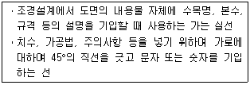
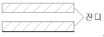
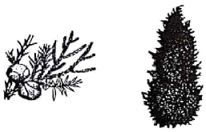
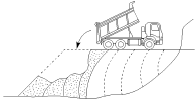
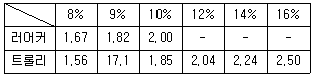
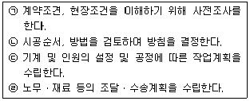
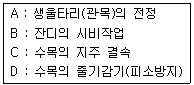

조경산업기사 (2017-09-23 기출문제)
1과목: 조경계획 및 설계
1. 다음 중 고려시대에 성행하다가 조선시대에 잘 사용하지 않은 정원 시설은?
- 정자
- 석가산
- 연못
- 화오(花塢) 또는 화계(花階)
(정답률: 85%)

2. 「낙양명원기」란 조경관련 서적을 집필한 사람은?
- 이어(李漁)
- 계성(計成)
- 송만종(宋萬鐘)
- 이격비(李格非)
(정답률: 84%)
3. 고대 중국의 정원 가운데 봉래산을 쌓고 가장 먼저 신선사상을 반영한 정원은?
- 진시황의 난지궁과 난지
- 송 휘종의 경림원(瓊林苑)
- 청 건륭제의 원명원(圓明園)
- 당 현종의 화청궁 정원(華淸宮 庭園)
(정답률: 73%)
4. 다음 중 장식화단인 파르테르(Parterre)와 소로(allee)를 가장 많이 이용한 정원은?
- 그리스 정원
- 영국 정원
- 프랑스 정원
- 이탈리아 정원
(정답률: 76%)
5. 19세기 영국에서 왕가소유의 영지를 일반대중에게 개방했던 공원이 아닌 것은?
- 버큰헤드 파크
- 하이든 파크
- 그린 파크
- 캔싱턴 가든
(정답률: 69%)
6. 조경사(造景史)를 연구하는 목적으로 가장 부적합한 것은?
- 세계 조경의 역사의 흐름을 파악하기 위하여
- 조경설계의 원류를 파악하여 현대에 접목시키기 위하여
- 고유한 조경양식에 대한 국가간 상호영향을 최소화하기 위해서
- 여러 가지 인자에 의해 영향을 받은 조경양식의 특징을 연구하기 위하여
(정답률: 85%)
7. 조선시대 정원에 사용되었던 괴석은 무엇을 가리키는 말인가?
- 괴이한 생김새의 자연석
- 물건에 앉기 위해 네모나게 다듬은 돌
- 시간을 확인하기 위해 석재로 만든 장식물
- 돌 화분을 올려놓기 위해 아름답게 조각해 놓은 돌
(정답률: 85%)
8. 경복궁의 후원에 위치하여 주렴계(周濂溪)의 애련설(愛蓮說) 구절에서 명칭을 따온 곳은?
- 대조전(大造殿)
- 낙선재(樂善齋)
- 교태전(交泰殿) 후원
- 향원정(香遠亭)과 연지(蓮池)
(정답률: 67%)
9. 도시공원 중 생활권공원의 유형에 해당하지 않는 것은? (단, 도시공원 및 녹지 등에 관한 법률을 적용)
- 소공원
- 어린이공원
- 근린공원
- 체육공원
(정답률: 79%)
10. 공원관리청은 자연공원을 효과적으로 보전하고 이용할 수 있도록 하기 위하여 용도지구를 공원계획으로 결정할 수 있다. 다음 중 용도지구에 해당되지 않는 것은?
- 공원자연보존지구
- 공원자연경관지구
- 공원마을지구
- 공원문화유산지구
(정답률: 50%)
11. 도시ㆍ군관리계획 설계도면에서 도시계획 지역의 구분과 지역표현색의 연결이 틀린 것은?(오류 신고가 접수된 문제입니다. 반드시 정답과 해설을 확인하시기 바랍니다.)
- 관리지역 –무색
- 도시지역 –빨강
- 상업지역 –보라
- 주거지역 –노랑
(정답률: 65%)
12. 경관생태학에서 의미하는 패치(patch)의 예로 가장 적합하지 않은 것은?
- 초원의 동물 이동로
- 농경지의 잔여 산림지역
- 산림 내의 소규모 초지
- 사막의 오아시스
(정답률: 68%)
13. 조경계획을 계획의 과정에 의해 분류할 때 구체적인 시설물의 지정과 공간분할이 토지상에 정확하게 3차원적으로 표현되며, 시공을 위한 재료의 수량, 시행방법을 표현한 실질적인 계획은?
- 구상계획
- 기본계획
- 실시계획
- 관리ㆍ운영계획
(정답률: 81%)
14. 다음 중 지형경관(Feature landscape)을 구성하는 경관요소가 될 수 있는 것은?
- 높은 절벽
- 숲속의 호수
- 계곡 끝에 있는 폭포
- 고속도로
(정답률: 69%)
15. 옥상정원 설계 시 중점 주의사항으로 가장 거리가 먼 것은?
- 오염물질의 정화
- 식재 토양층의 깊이
- 수목 및 토양의 하중
- 옥상 바닥의 보호 및 방수
(정답률: 85%)
16. 색의 대비현상에 관한 설명으로 틀린 것은?
- 색채가 클수록 대비현상이 강해진다.
- 대비되는 부분을 계속해서 보면 대비효과가 적어진다.
- 두 색 사이에 무채색 테두리를 두르면 대비효과가 커진다.
- 자극과 자극 사이의 거리가 멀어질수록 대비 현상이 약해진다.
(정답률: 65%)
17. 도심에 위치한 건축물들 사이에 작은 쌈지공원을 조성하고자 한다. 다음 중 가장 필요한 조사항목은 무엇인가?
- 미기후 조사
- 가시권 분석
- 지질 구조 조사
- 이용객 행태 조사
(정답률: 68%)
18. 토양의 단면에 대한 설명으로 틀린 것은?
- A층은 기후, 식생, 생물 등이 영향을 가장 강하게 하는 층이다.
- B층은 황갈색 내지 적갈색이며, 표층에 비해 부식함량이 적은 층이다.
- H층은 분해가 진행되어 육안으로 낙엽의 기원을 전혀 알 수 없는 유기물 층이다.
- L층은 낙엽이 분해되었지만 원형을 다소 유지하고 있어 식물조직을 육안으로 알 수 있다.
(정답률: 62%)
19. 다음 설명하는 선의 종류는?

- 인출선
- 중심선
- 치수선
- 치수 보조선
(정답률: 75%)
20. 경사로 및 계단의 설계 내용으로 틀린 것은?
- 휠체어사용자가 통행할 수 있는 경사로의 유효폭은 120cm 이상으로 한다.
- 연속 경사로의 길이 20m마다 1.2m×1.2m 이상의 수평면으로 된 참을 설치할 수 있다.
- 옥외에 설치하는 계단의 단수는 최소 2단 이상으로 하며 계단바닥은 미끄러움을 방지할 수 있는 구조로 설계한다.
- 높이 2m를 넘는 계단에는 2m 이내마다 당해계단의 유효폭 이상의 폭으로 너비 120cm 이상인 참을 둔다.
(정답률: 63%)
2과목: 조경식재
21. 고속도로의 사고방지를 위한 조경 식재방법으로 거리가 먼 것은?
- 지표식재
- 차광식재
- 명암순응식재
- 완충식재
(정답률: 70%)
22. 다음 그림과 같이 잔디를 줄떼심기 할 경우 심는 간격을 줄떼 잔디의 폭과 동일하게 하면 잔디는 전체 면적의 얼마 정도가 필요한가?

- 25%
- 50%
- 75%
- 100%
(정답률: 69%)
23. 비탈면의 안정을 위해 잔디식재를 할 때 그 설명이 틀린 것은?
- 잔디 1매당 적어도 2개의 떼꽂이로 잔디가 움직이지 않도록 고정한다.
- 비탈면 전면(평떼)붙이기를 줄눈에 십자줄이 형성되도록 틈새를 만들며, 잔디 소요면적은 비탈면면적보다 조금 적게 적용한다.
- 비탈면 줄떼다지기는 잔디폭이 10cm 이상 되도록 하고, 비탈면에 10cm 이내 간격으로 수평골을 파서 수평으로 심고 다짐을 철저히 한다.
- 잔디생육에 적합한 토양의 비탈면경사가 1:1보다 완만한 때에는 비탈면을 일시에 녹화하기 위해서 흙이 붙어 있는 재배된 잔디를 사용하여 붙인다.
(정답률: 59%)
24. 다음 중 능소화과(科) 에 속하는 수종은?
- 벽오동
- 꽃개오동
- 오동나무
- 참오동나무
(정답률: 66%)
25. 낙엽속의 유기질 질소가 곰팡이나 박테리아에 의해 분해되면 발생하는 것은?
- NH4
- NH3
- CH4
- N2
(정답률: 63%)
26. 상록활엽교목에 해당되지 않는 수종은?
- 녹나무
- 구살잣밤나무
- 돈나무
- 참식나무
(정답률: 50%)
27. 식재로 얻을 수 있는“건축적 기능”이라고 볼 수 없는 것은?
- 공간 분할
- 대기 정화작용
- 사생활의 보호
- 차단 및 은폐
(정답률: 83%)
28. 가로수로서 능수버들(Salix pseudolasiogyne)의 단점에 해당하는 것은?
- 수형(樹形)
- 생장력(生長力)
- 토양 적응성
- 병해충(病害蟲)
(정답률: 64%)
29. 다음 중 수피에 가시가 없는 수종은?
- 산초나무
- 해당화
- 산사나무
- 가시나무
(정답률: 60%)
30. 우리나라 문화재 보호구역을 식재보수 계획하고자 할때 고려해야 할 사항이 아닌 것은?
- 가능한 희귀수종으로 한다.
- 그 지역에 자라는 향토수종으로 한다.
- 주변 환경과 어울리는 수종으로 한다.
- 이식이 용이하고 관리가 쉬운 수종으로 한다.
(정답률: 86%)
31. 수목의 수피 색깔이 틀린 것은?
- 자작나무 : 백색
- 곰솔 : 황색
- 벽오동 : 녹색
- 낙우송 : 적갈색
(정답률: 65%)
32. 다음 중 우리나라 중부지방의 월별 개화수종에 대한 연결 중 틀린 것은?
- 2~3월 : 싸리
- 4~5월 : 모란
- 6~7월 : 자귀나무
- 7~8월 : 능소화
(정답률: 67%)
33. 한국(울릉도), 중국, 일본이 원산지인 수목은?

- Aesculus turbinata Blume
- Cedrus deodara Loudon
- Juniperus chinensis L.
- Prunus yedoensis Matsum.
(정답률: 65%)
34. 수목의 속명(屬名)이 옳지 않게 연결된 것은?
- 벚나무 –Prunus
- 소나무 –Pinus
- 솔송나무 –Tsuga
- 전나무 –Larix
(정답률: 65%)
35. 고광나무(Philadelphus schrenkii)의 꽃 색깔로 가장 적합한 것은?
- 적색
- 황색
- 백색
- 자주색
(정답률: 67%)
36. 덩굴성으로 분류할 수 없는 수종은?
- 송악
- 줄사철나무
- 멀꿀
- 담팔수
(정답률: 41%)
37. 임해매립지에서 특히 내조성, 내염성을 고려한 수종의 선택이 필요한데 우리나라에서 해안림을 조성할 때 방풍림으로 사용할 수 있는 상록확엽교목은?
- 멀구슬나무
- 사철나무
- 구실잣밤나무
- 후피향나무
(정답률: 53%)
38. 광선과 식물의 관계에 대한 설명으로 틀린 것은?
- 식물이 광합성에 이용할 수 있는 가시광선영역을 광합성보상광이라 한다.
- 자외선의 경우, 잎 각피층에 의해 거의 흡수된다.
- 활엽수는 침엽수에 비해 700 ~ 1000mm파장의 근적외선을 더 많이 반사시킨다.
- 광량은 일반적으로 광도(light intensity)로 표시하며 사용하는 단위는 촉광(foot candle) 또는 럭스(lux)등이 있다.
(정답률: 50%)
39. 다음 산수유와 생강나무에 대한 설명 중 틀린 것은?
- 둘 다 잎의 배열은 대생이다.
- 둘 다 이른 봄에 노란색 꽃이 핀다.
- 생강나무는 녹나무과, 산수유는 층층나무과이다.
- 생강나무는 낙엽활엽관목이고, 산수유는 낙엽활엽소교목이다.
(정답률: 56%)
40. 토양의 이학적 성질에서 식물생육에 알맞은 흙의 용적비율(容積比率) 중 무기물의 비율로 적합한 것은? (단, 조성은 무기물, 공기, 물, 유기물로 구성)
- 5%
- 20%
- 25%
- 45%
(정답률: 62%)
3과목: 조경시공
41. 목재에 대한 설명으로 옳지 않은 것은?
- 비중에 비하여 강도가 크다.
- 온도에 대하여 팽창, 수축성이 비교적 작다.
- 함수량의 증감에 따라 팽창, 수축성이 크다.
- 재질이나 강도가 균일하고 알칼리에 견디는 힘이 크다.
(정답률: 55%)
42. 다음 중 우수시 우수관으로 흘러 들어가기 직전에 우수받이(Catch basin)를 설치하는 주된 목적은?
- 유속을 줄이기 위해
- 하수냄새가 발생하는 것을 방지하기 위하여
- 우수로부터 모래나 침전성 물질을 제거시키기 위하여
- 우수관의 용량 이상으로 유입되는 것을 방지하기 위한 유량조절을 위하여
(정답률: 66%)
43. 건설공사를 건설업자에게 도급한 자로서 해당공사의 시행주체이며 공사를 시행하기 위하여 입찰을 부여하거나 공사를 발주하고 계약을 체결하여 이를 집행하는 자를 무엇이라 하는가?
- 발주자
- 수급인
- 감리원
- 현장대리인
(정답률: 74%)
44. 단위시멘트량이 300kg, 단위수량(水量)이 180kg일 때 물시멘트비(W/C)는 몇 %인가?
- 30%
- 60%
- 80%
- 160%
(정답률: 78%)
45. 단독도급과 비교하여 공동도급(joint venture)방식의 특징으로 거리가 먼 것은?
- 2이상의 업자가 공동으로 도급함으로서 자금부담이 경감된다.
- 공동도급을 구성한 상호간의 이해 충돌이 없고 현장관리가 용이하다.
- 대규모 공사를 단독으로 도급하는 것 보다 적자 등의 위험 부담이 분담된다.
- 고도의 기술을 필요로 하는 공사일 경우, 경험기술이 부족한 업자도 특히 그 공사에 능숙한 업자를 구성원으로 참여시켜 안전하게 대처 할 수 있다.
(정답률: 75%)
46. 콘크리트에 사용되는 골재의 품질요구조건으로 틀린것은?
- 실적율이 클 것
- 표면이 거칠고 둥근 것
- 시멘트 강도 이상의 견고한 것
- 석회석, 운모 함유량이 클 것
(정답률: 59%)
47. 다음 중 옥상녹화에 대한 설명으로 가장 부적합 한 것은?
- 건축으로 훼손된 도심지의 녹지 및 토양생태계를 인 공지반 위에 복원하는 의미로서 도시의 열섬현상을 완화 하고 건축물의 냉난방에 소요되는 에너지를 절약하는 효과가 있다.
- 창으로 자연광이 유입되거나 인공광의 도입이 가능한 지하, 발코니, 베란다 등에 식물의 생장을 위한 기반조성과 식재 등으로 기후조절 및 환경미화의 효과가 있다.
- 옥상조경과 옥상녹화는 건축물의 중량허용에 따른 토심과 교목의 식재여부로 구분하여, 옥상녹화는 최소한의 토심으로 지피식물이나 관목류를 피복하는 형태이다.
- 여름철의 경우 옥상녹화를 도입한 건물의 표면온도는 일반적인 옥상보다 낮아 에너지를 절감할 수 있다.
(정답률: 67%)
48. 대형 수목과 자연석의 적재 및 장거리 운반, 쌓기, 놓기 등에 효과적으로 사용되는 장비는?
- 크레인
- 로드롤러
- 콤팩터
- 로더
(정답률: 71%)
49. 보통 토사 200m3, 경질 토사 100m3의 터파기에 필요한 노무비는 얼마인가? (단, 보통토사 터파기에는 1m3 당 보통인부 0.2인, 경질토사 터파기에는 1m3당 보통인 부 0.26인의 품이 소요되며, 보통 인부의 노임은 50000원/일 이다.)
- 1,000,000원
- 2,300,000원
- 3,000,000원
- 3,300,000원
(정답률: 57%)
50. 맨홀의 배수 관거내경이 100cm 이하일 때 맨홀의 최대 설치 간격은?
- 50m
- 75m
- 100m
- 150m
(정답률: 60%)
51. 콘크리트 혼화제 중 경화(硬化)시 응결촉진제의 주성분으로 사용되며 조기강도를 크게 하는 것은?
- 산화크롬
- 이산화망간
- 염화칼슘
- 소석회
(정답률: 66%)
52. 품의 할증에 관한 설명이 틀린 것은?
- 도시지구, 공항 등에서는 인력품을 50%까지 가산할 수 있다.
- 굴취시 야생일 경우에는 굴취품의 20%까지 가산할 수 있다.
- 관목류 식재시 지주목을 설치하지 않을 때는 식재품을 20%까지 감할 수 있다.
- 군작전 지구 내에서는 작업능률에 현저한 저하를 가져올 때는 작업할증률을 20%까지 가산할 수 있다.
(정답률: 57%)
53. 평떼붙임을 하여야 할 녹지 면적을 Auto CAD로 측정하였더니 328.5472m2가 나왔다. 실제 설계서에서 적용해야 할 면적은 몇 m2로 표기해야 하는가? (단, 건설공사 표준품셈을 적용한다.)
- 338m2
- 329m2
- 328.5m2
- 328.55m2
(정답률: 62%)
54. 다음 중 계획우수량과 관련된 용어 설명 중 틀린 것은?
- 유출계수 : 유출계수는 토지이용도별 기초유출계수로부터 총괄유출계수를 구하는 것을 원칙으로 한다.
- 우수유출량의 산정식 : 최소계획우수유출량의 산정은 합리식에 의하는 것을 원칙으로 한다.
- 확률년수 : 하수관거의 확률년수는 10~30년, 빗물펌프장의 확률년수는 30~50년을 원칙으로 한다.
- 유달시간 : 유입시간과 유하시간을 합한 것으로서 전자는 최소단위배수구의 지표면특성을 고려하여 구하며, 후자는 최상류관거의 끝으로부터 하류관거의 어떤 지점까지의 거리를 계획유량에 대응한 유속으로 나누어 구하는 것을 원칙으로 한다.
(정답률: 44%)
55. A점과 B점의 표고는 각각 145m, 170m이고 수평거리는 100m이다. AB선상에 표고가 160m 되는 점의 A점으로부터 수평거리는 얼마인가?
- 20m
- 40m
- 60m
- 80m
(정답률: 61%)
56. 흙의 성토작업에서 아래 그림과 같은 쌓기방법은?

- 물다짐 공법
- 비계층 쌓기
- 수평층 쌓기
- 전방층 쌓기
(정답률: 66%)
57. 구조계산의 첫번째 단계에 대한 설명으로 옳은 것은?
- 구조물에 생기는 외응력을 계산한다.
- 구조물에 작용하는 하중을 산정한다.
- 구조물의 각 지점에 생기는 반력을 계산한다.
- 재료의 허용강도와 내응력의 크기를 서로 비교한다.
(정답률: 66%)
58. 다음 재료 중 건설공사 표준품셈에 따른 할증률이 적합하지 않은 것은?
- 붉은 벽돌 : 3%
- 조경용 수목 : 10%
- 목재(판재) : 5%
- 석재판 붙임용재(부정형 돌) : 30%
(정답률: 62%)
59. 리어카로 토사를 운반하려 한다. 총 운반거리는 50m인데, 이 중 30m가 10%의 경사로 이다. 총 운반수평거리는 얼마로 계산하여야 하는가?

- 60m
- 80m
- 100m
- 120m
(정답률: 56%)
60. 다음 중 시공계획의 내용을 순서대로 옳게 나열한 것은?

- ㉠ → ㉢ → ㉣ → ㉡
- ㉠ → ㉡ → ㉢ → ㉣
- ㉠ → ㉡ → ㉣ → ㉢
- ㉠ → ㉢ → ㉡ → ㉣
(정답률: 57%)
4과목: 조경관리
61. 조경시설물의 효율적인 유지관리를 위하여 필요한 항목으로서 가장 관계가 적은 것은?
- 시간절약
- 인력의 절약
- 고가 재료의 채택
- 장비의 효율적 이용
(정답률: 75%)
62. 다음 잔디관리와 관련된 설명 중 옳지 않은 것은?
- 뗏밥은 잔디의 생육이 불량할 때 두껍게 3회 정도 구분하여 준다.
- 시비는 가능하면 제초작업 후 비오기 직전에 실시하며 불가능시에는 시비 후 관수한다.
- 잔디시비는 질소, 인산, 칼리성분이 복합된 비료를 1회에 m2당 30g씩 살포한다.
- 잔디깎기 횟수는 사용목적에 부합되도록 실시하되 난지형 잔디는 생육이 왕성한 6~9월에 집중적으로 실시한다.
(정답률: 63%)
63. 목재시설물의 균류에 의한 부패를 막을 수 있는 방부제로 가장 거리가 먼 것은?
- 크레오소트유
- 나프텐산구리
- 산화크롬ㆍ구리화합물
- 지방산 금속염계
(정답률: 34%)
64. 일반적인 식재 후 관리방법으로 맞지 않는 것은?
- 연 1회 정기적으로 병충해 발생 시에는 만성시에 효과적으로 대치한다.
- 겨울의 추위나 건조한 강풍에 피해가 예상되는 수목은 11월 중에 지표로부터 1.5m 높이까지의 수간에 모양을 내어 짚 또는 녹화마대로 감싸준다.
- 교목과 관목은 연 2회 이상 수세와 수형을 고려하여 정지ㆍ전정하며 형태를 유지시킨다.
- 숙근지피류는 필요한 경우 하절기 직사광노출등에 의한 생육장애가 발생하지 않도록 차광막 등을 설치한다.
(정답률: 51%)
65. 다음의 연중 식물관리 항목 중 작업 개시 시기가 가장 빠른 것은? (단, 3월부터 이듬해 2월까지 중 시기적으로 처음 개시 작업을 기준으로 한다.)

- A
- B
- C
- D
(정답률: 58%)
66. 수목의 그을음병을 방제하는데 가장 적합한 것은?
- 방풍시설을 설치한다.
- 중간 기주를 제거한다.
- 해가림 시설을 설치한다.
- 흡즙성 곤충을 방제한다.
(정답률: 57%)
67. 절토비탈면에 상단의 외부로부터 빗물이 흘러 비탈면의 내부로 넘쳐흐르고 있다. 다음 중 어느 배수시설을 주로 보수하는 것이 효과적인가?
- 산마루도수로
- 비탈면도수로
- 소단배수구
- 하단배수로
(정답률: 58%)
68. 동물(곤충)이 몸속에서 생산되고, 몸 밖으로 분비, 배출되어 같은 종의 다른 개체에 특이적인 생리작용을 나타내는 물질은?
- 알로몬(allomone)
- 호르몬(hormone)
- 페로몬(pheromone)
- 카이로몬(kairomone)
(정답률: 76%)
69. 다음 부식성분 중 알칼리에 불용성인 성분은?
- humin
- humic acid
- fulvice acid
- hymatomelanic acid
(정답률: 53%)
70. 다음 초화류의 관수(灌水, irrigation) 요령으로 틀린것은?
- 겨울철에는 이른 아침에 충분히 관수하여야 한다.
- 식물이 활착을 한 후에는 자주 관수할 필요가 없다.
- 어린 모종일 때는 건조하지 않을 정도로 관수해야 한다.
- 과종 후에는 씨가 이동하지 않도록 고운 물뿌리개나 분무기로 관수한다.
(정답률: 64%)
71. 시설물 유지 관리의 연간작업 계획 중 정기적으로 하는 작업으로 분류하기 가장 부적합한 것은?
- 점검
- 청소
- 계획수선
- 하자처리
(정답률: 70%)
72. 절토 비탈면에 대한 일상적 점검 이외에 상세점검을 실시하기에 가장 적당한 시기는?
- 봄의 신초 발생 후
- 여름의 우기 전
- 여름의 우기 후
- 가을의 낙엽 전
(정답률: 67%)
73. 수목전정의 원칙과 가장 거리가 먼 것은?
- 수목의 역지는 제거한다.
- 수목의 굵은 주지는 제거한다.
- 무성하게 자란 가지는 제거한다.
- 수형이 균형을 잃은 정도의 도장지는 제거한다.
(정답률: 79%)
74. 환경조건에 따른 제초제의 살초효과에 대한 설명으로 틀린 것은?
- 습도는 높을수록 약효는 빨리 나타난다.
- 살초효과는 대체로 저온보다 고온일 때 높다.
- 사질토나 저습지에서는 약해가 생기고, 약효는 떨어진다.
- 약물의 감수성은 노화부분이 연약부분보다 민감하다.
(정답률: 58%)
75. 연간평균근로자수가 400명인 사업장에서 연간 2건의 재해로 인하여 2명의 재해자가 발생하였다. 근로자가 1일 9시간씩 연간 300일을 근무하였을 때 이 사업장의 연천인율은 약 얼마인가?
- 1.85
- 4.44
- 5.00
- 10.00
(정답률: 53%)
76. 유희시설의 재료별 유지관리에 관한 설명 중 옳지 않은 것은?
- 목재시설의 도장이 벗겨진 부분은 즉시 방부처리하여 부패를 방지한다.
- 합성수지제에 균열이 생긴 경우는 전면 교체하는 것이 효과적이다.
- 해안의 염분, 대기오염이 심한 지역에서는 철재에 강력한 방청처리가 반드시 필요하다.
- 콘크리트 부위의 보수는 파손부분을 평평히 매끄럽게 깎아내고 그 곳에 콘크리트를 재 타설한다.
(정답률: 58%)
77. 깎지벌레 방제를 위하여 B유제 40%를 0.01%로 하여 ha당 500L를 살포하려면 ha당 소요되는 원액량(cc)은? (단, 비중은 1로 한다.)
- 100cc
- 125cc
- 250cc
- 500cc
(정답률: 57%)
78. 시멘트 콘크리트 포장의 파손원인이 콘크리트슬래브 자체의 결함으로 볼 수 없는 것은?
- 줄눈 시공 불량으로 인한 균열
- 동결 융해로 인한 지지력 결함
- 다짐 및 양생의 불량으로 인한 결함
- 슬립바(slipbar)의 미사용으로 인한 균열
(정답률: 51%)
79. 다음 중 가해 수종이 주로 침엽수가 아닌 해충은?
- 버들바구미
- 솔거품벌레
- 소나무좀
- 북방수염하늘소
(정답률: 59%)
80. 수목의 월동작업 시 동해의 우려가 있는 수종과 온난한 지역에서 생육 성장한 수목을 한랭한 지역에 시공하였거나 지형ㆍ지세로 보아 동해가 예상되는 장소에 식재한 수목은 일반적으로 기온이 몇 ℃이하로 하강하면 방한조치를 하여야 하는가?
- 10
- 7
- 5
- 0
(정답률: 67%)